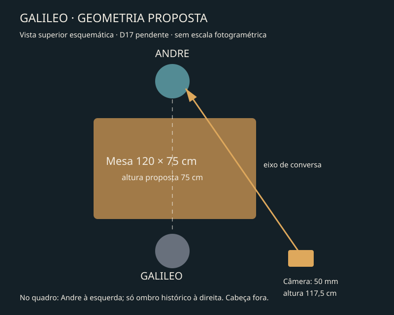

THE TABLE BETWEEN CENTURIES · PRÉ-VISUALIZAÇÃOUma pergunta. Uma resposta.
Depois, a reação.
Galileo · G-L03/G-L04 · 16 s · três imagens e dois áudios existentes. Zero geração paga.
Voz-guia e imagens candidatas. Não é atuação gerada nem prova de lip-sync. Revisão integral por ouvido e aceite de Andre pendentes. O texto inglês permanece intacto.
Espaço proposto

Medidas, lente e posição são proposta D17. Cabeça histórica inteira fora do quadro; nenhum novo direito de revelar nuca. IN/OUT ainda precisam de aprovação de semelhança e continuidade.
Fichas ligadas ao quadro oficial
G-MASTER · Master compartilhado
Provar duas pessoas no mesmo espaço sem revelar o rosto histórico.
Cabeça histórica inteira fora do quadro; Andre à esquerda; ombro/mão à direita.
50 mm e altura 117,5 cm são proposta, não EXIF verificado.
Candidato · checagem/aceite pendentes
G-LISTEN-KF · Keyframe de escuta
Preservar geometria quando Andre escuta.
Mudança mínima: boca fechada e mãos em repouso.
Mesma câmera, luz, assento e mesa do master.
Candidato · checagem/aceite pendentes
G-P03 · Escuta durante G-L03
Andre considera a pergunta; ainda não oferece resolução.
Respiração discreta; sem fala e sem repetição de piscadas.
Câmera fixa; cabeça histórica fora.
Candidato · checagem/aceite pendentes
G-P04 · Fala G-L04
Calor e firmeza sem triunfalismo; a pergunta continua aberta.
Uma fala exata e um gesto baixo; boca fecha após a frase.
Câmera fixa; preservar mesa/assento; voz nativa apenas guia D14.
Candidato · checagem/aceite pendentes
G-REACTION · Reação após a resposta
A resolução nasce de “does not settle a question”, nunca antes.
Microalteração de olhos após a fala inteira no animatic; 2 s de edição são proposta local.
Crop de olhos sem recuo ou rosto adicional.
Candidato · checagem/aceite pendentes
G-HAND-OPTION · Contato de mão opcional
Alívio físico somente se a montagem precisar.
Soltar levemente a tensão; contato legível na mesa selecionada.
Detalhe fixo; não adicionar ao animatic só por existir.
Candidato · checagem/aceite pendentes
Fontes e limites
Triagem de 13 imagens · Medições dos 22 guias · Hash e verificação técnica · Decisões pendentes
Fonte canônica: 05_storyboard/source/production-plan.json. Board, aprovações, recibos e ledger continuam com seus próprios escopos. O player não aprova mídia.